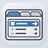

TabRoam按你的习惯搜索。
标签页、书签、历史记录在本地检索。TabRoam 不主动向开发者服务器上传查询；执行网络搜索时，所选搜索引擎会接收关键词。
键盘操作
- 唤起命令栏
- ⌘ ⇧ Space / Ctrl Shift Space
- 选择结果
- ↑ ↓
- 默认打开 / 切换标签页
- Enter
- 在当前标签页打开
- ⌘ Enter / Ctrl Enter
- 关闭并恢复焦点
- Esc
如果快捷键被系统或其他扩展占用，请在 Chrome 快捷键页重新分配，或点击工具栏中的 TabRoam 图标。
权限用途
tabs：搜索各窗口的标签页；history / bookmarks：读取本地历史和书签；activeTab / scripting：仅在你唤起插件后显示网页浮层；storage：保存设置和会话内最近标签；favicon：读取 Chrome 缓存图标。无需站点常驻权限，不读取网页正文，没有开发者服务器、遥测或广告。执行搜索或访问网址时，目标引擎或站点会正常接收查询及浏览请求。
chrome:// 页面、Chrome 应用商店等不允许注入的位置，插件会打开备用扩展页；无痕窗口不启用。